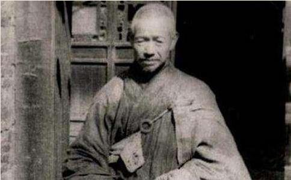

弥光老和尚诞生于1912年，湖南衡阳人。自幼天资灵秀，父母极为怜爱，举家水运买卖
老和尚四十四岁时，以治疗风湿病的因缘，前往扬州高旻寺住禅堂，病愈不久，即受肃反运动牵连。从那时起，
弥光老和尚天天忍受批斗之苦。有一次，他又被绳子捆绑手脚，拉到台上，胸前被挂上“打倒反动和尚弥光”的牌子。在群情激奋的“打倒”声潮中，一位红卫兵青年举起碗口粗的梧桐木棍猛击老和尚头部，老人应声倒地，失去知觉，头皮肿起了三四寸高。失去理智的大众蜂拥而上，棍棒相加，怒吼着：“你不
当时，很多僧人忍受不了批斗之苦而返俗还家，弥光老和尚不肯回湖南，于是与高旻寺仅有的另外三位僧人一起被下放到扬州市邗江县汊河大队姚庄小队养猪放牛。
在那个彻底根除
冬天快要过去，临近春节的时候，为了鼓励道友坚守宗门的信念，弥光老和尚竟然顶着天大的压力，在自己寄居的破旧门楣上，写下期待宗教政策恢复的对联，曰：下放农村十三春，养猪牧牛度光阴；求佛慈光明心地，愿度众生出苦轮。这幅对联一直贴了十三年。每当日落黄昏，他都隔河远望高旻禅寺，那开宗选佛的道场，曾是寄托无限宗教情感的家园！
四人劳动之余偷偷聚会的时候，弥光老和尚向道友们断言：“十三年后世界会转过来，高旻寺又会重兴。”三位道友颇不相信，其中某师说：“你说鬼话！”弥光老和尚说：“我们打赌吧！如果79年开始恢复宗教政策，你拿五十块钱请我吃斋！”彼此达成协定。
四人从那年开始，在汊河大队姚庄小队整整度过了十个春秋。他们天天祈盼“
1979年，老和尚已六十八岁高龄。因中日邦交正常化的社会形势，邓小平出访日本，迎来了鉴真大师像回国探亲，政府及佛教协会安排老和尚在大明寺平山堂作接待员。
因为当时全社会都彻底没有出家人，政府在扬州附近找到六十位工作人员，又在苏州灵岩山找来四十位尚未成家的下放僧人，让大众住进大明寺斋堂中，穿劳动装在寺中工作。日常的纪律是不许盘腿，不许
此时，弥光老和尚已了解到国家宗教信仰政策开始松动，恢复佛教的希望使他充满了勇气。有一回，
当时的纪律是内穿工作装，外套海青僧装，分列两边，不许说话。披着在工作装外面的僧服使弥光老和尚内心燃起了希望之火，他眼看着赵朴初及大量宾客即将从身边经过时，忽然从僧人仪仗队中冲出来，上前握住赵朴老的双手，拉开表面僧装，露出内里的工作服，堵住来宾去路，强扮殷勤地寒暄道：“朴老您好啊！听说您是民国元年（生）的，我也是民国元年（生）的，我们同岁！”
所有在场的人都目瞪口呆，各国客人连连惊叹：“原来这些僧人都是假扮的……”此事于次日即被各国媒体连连报道，在各国友人的共同关注下，宗教信仰自由政策终于开始逐步落实。
事发当时，弥光老和尚还处在劳动改造期间，当晚即被当地官员控制起来，进行惩罚。老和尚以大
同年，为了唤醒世人对佛教的信仰，推动佛教在中华大地上的复苏，弥光老和尚在上海
朝礼九华山结束，弥光老和尚法喜充满，乘船到上海李政友
拜到法雨寺附近时，一位善意的老妇人对老和尚讲：“老和尚，你还烧拜香，这里佛教还没有恢复，庙里驻着部队，你拜进去，他们会打人的。”老和尚坚持要去，次日拜到法雨寺门口时，四条带刺刀的枪挡住老和尚，不让进去。老和尚解释说：“我是和尚，现在不是恢复宗教政策了吗？我回家有什么不可以呢？”士兵喊来了他们的领导，穿一身白色军服，笑脸相迎，并告知说，他们是海防军。老和尚问：“你们怎么还不退军？”领导回答说：“老百姓会来抢庙，不得不防。”于是，老和尚随着他们的引导分别
拜到普济寺时，该寺已有三位出家人，其中一位名悟道师。老和尚要求次日凌晨大家一起上早殿念经，三人都不敢，老和尚即拿出随身携带的《刑法报》上关于落实宗教政策的文件给他们看，三人这才放心。次晨上早殿，下午上晚殿，因为多年唱念闲置，只有悟道师一人会放蒙山。
晚课后，悟道师与弥光老和尚商量：“老法师，我们把早晚课立起来好吗？”老和尚回答说：“只是没人敲
三步一拜到达杨枝敬老院门口时，防卫士兵以十五条枪一起挡住去路，其中一人准备开枪，两位老年僧人匆匆上前解围。弥光老和尚拿出报纸上的文件，与之说理，最后终于因领导批示而得到
普陀山朝拜
次日早晨，弥光老和尚拜天童寺，寺内设有养老院，共四十多人，不许过夜，后来找到当家师，才被勉强留宿，但不许走动。老和尚深夜偷偷去往大雄宝殿，见殿中佛像大多被砸毁，只剩几尊石刻的
拜到国清寺时，守门的人不让进，弥光老和尚解释说：“我为烧拜香而来。”那人深感诧异地嘀咕着：“这年头，还有敢烧拜香的。”后勉强同意入寺礼拜。此时，寺中智者大师舍利塔已被全部拆毁。拜山结束后一个月，地方领导
1980年，弥光老和尚六十九岁。他来到大明寺，不久便被管理寺院的当地干部赶走。事隔几天，他又强行回到寺院居住，对方威胁说要打死他。老和尚说：“我不怕，我只有一个头，除非你把我的头砍去。只要你不砍，我就一定要把僧人的房子争回来。”
那时僧人少，不敢来寺院住，弥光老和尚先住进寺内，占住一个房间，早晚念经，继而又争回第二间……自从住进大明寺，他含辛茹苦，四方奔走，苦劝僧众回寺居住，逐渐形成规模以后，四方僧人也闻风赶来，大明寺逐渐恢复了过去的规模。同年，弥光老和尚又牵头向地方政府争取旌忠寺，经历无数坎坷，终于使旌忠寺获得了政策上的开放。
1981年，高旻寺还被扬州地方的蚕丝厂占用着，因其蚕丝产品行销各国，倍受赞誉，恢复寺院的工作倍加艰难。虽然与地方人士反复斡旋，但困难重重，毫无进展。老和尚最后下定决心，前往北京寻找政府高层解决问题。
他与慧净长老同行前往北京，在北京找到了
当时，中国佛教协会的
在此期间，老和尚不辞劳苦，四方
厂方极为警惕，开会说：“千万不能让此人住进来，他住进来，庙就是他的，再也赶不走了。”老和尚的确心思如此，他自念言：“反正我住下了，打死我也不走。”如此周旋了一年多，直到三中全会以后，信仰政策更加松动，老和尚则更加努力地争取住房，或一间，或半间，慢慢积累下来，一段时间以后，竟然清走了天王殿遗留的所有住户。
老和尚请回散落在周边被迫还俗的僧众，人数越来越多，很快就将天王殿住满了。此后，房间不够，早先的禅和子们也陆续回来，便又开始考虑盖房接众。弥光老和尚以步步为营的方式推动“住房战役”，最终将高旻寺的所有寺产全部收复为常住财产。
从1979年到1986年的七年间，在弥光老和尚的推动下，扬州的大明寺、旌忠寺、高旻寺、观音寺纷纷恢复开放政策。
下放期间，老和尚坚持保护佛教奄奄一息的信仰火种，坚持不穿俗服穿僧装。在大众批斗、人身攻击的重大打击面前，这位老人的意志从来没有屈服过。虽然在很长的一段时间里，寺院没了，佛像没了，经典没了，道友没了，但他没有被摧垮，在漫长的独自修行历练中，他养成了独立无侣也要担当
弥光老和尚行持刚毅超常，率性直为，近乎狂狷，一切都自真心中发出。只要能利及大众，哪怕直接冲击他人颜面，也在所不惜。在协助恢复宗教信仰自由政策落实的过程中，弥光老和尚倾注了毕生的心血，正如他下放时对联所写的“养猪牧牛十三春”那样，十三年后，他终于迎来了中国全面落实宗教信仰自由的开始。